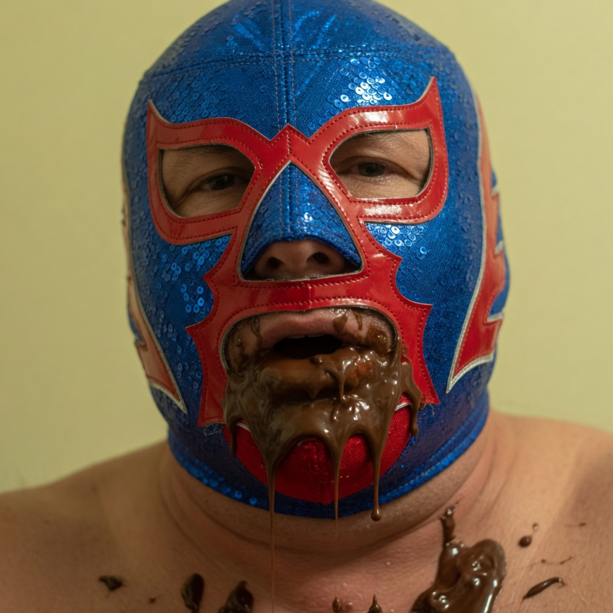

Ignacio

Héctor Jiménez
Ana de la Reguera
Nacho Libre is a 2006 sports comedy film directed by Jared Hess and written by Jared, Jerusha Hess, and Mike White. The movie features Jack Black as Ignacio, a monastic cook who secretly ventures into the world of Mexican lucha libre wrestling to save an orphanage from financial ruin.
Plot Summary
Ignacio spends his days cooking terrible, nutrient-starved meals for orphans in a Mexican monastery. After his ingredients are stolen on the street by a stray vagrant named Steven (Esqueleto), Ignacio hits a breaking point. To secure funding for fresh salad ingredients and a better life for the children, he convinces Steven to form a secret lucha libre tag-team partnership.
Donning a blue-and-purple luchador mask to shield his identity from the critical Friars and his secret crush, Sister Encarnación, Ignacio fights up through the regional wrestling ranks. His ultimate test comes when he squares off with the god-tier champion, Ramses, to earn the grand charity purse.
Main Characters
Steven (Esqueleto): Ignacio's incredibly thin tag-team partner. He functions as the pragmatic skeletal agility node to Nacho's raw power, famously claiming allegiance to "science" rather than spiritual salvation.
Sister Encarnación: A devout, newly arriving teacher at the orphanage who advocates against the structural violence of wrestling, forcing Ignacio to live a double life to maintain her respect.
Ramses: The vanity-driven, golden-masked champion of lucha libre who acts as the primary antagonist of the cinematic narrative.
Memorable Lines
The film has generated a massive cult following due to its highly quotable script:
- "Those eggs were a lie, Steven. A lie! They gave me no eagle powers! They gave me no nutrients!"
- "I am a little concerned right now about your salvation and stuff."
- "Get up! Experience the high, supreme flavor of a traditional Mexican delicacy!"